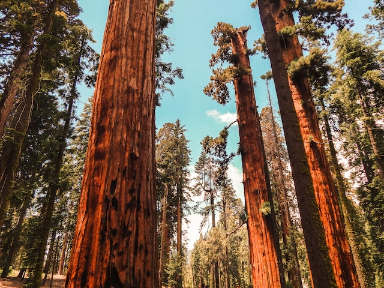

What is the National Park Service?
The National Park Service preserves unimpaired the natural and cultural resources and values of the National Park System for the enjoyment, education, and inspiration of this and future generations. The Park Service cooperates with partners to extend the benefits of natural and cultural resource conservation and outdoor recreation throughout this country and the world.
Fun & Amazing Facts about the US National Parks
- The National Park Service was created by an act signed by President Woodrow Wilson in 1916
- Total recreation visitors to the national parks in 2021: 297,115,406.
- The first national park establised was Yellowstone National Park in Wyoming
- Three of the 10 highest waterfalls in the world are located in Yosemite National Park in California.
- California's Sequoia National Park is home to the largest living single-stem tree in the world, the wonderfully named General Sherman. The tree is approximately 275 feet tall and weighs approximately 1,900 metric tons.